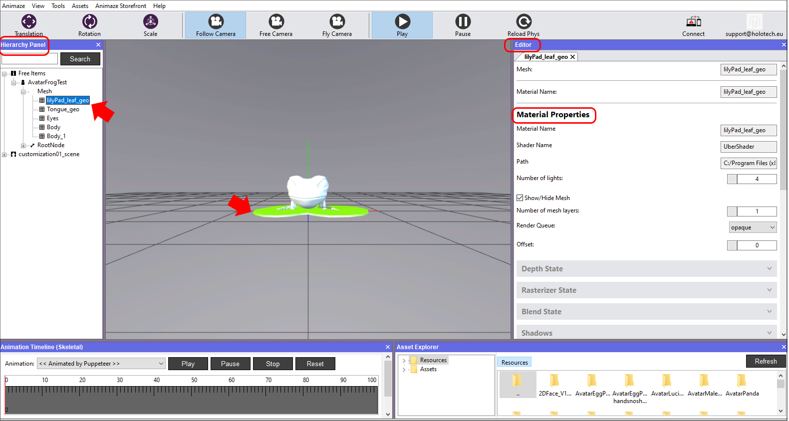

3Dアバターのインポート方法
このガイドでは、[ここでダウンロード]できるAvatarFrogTestという名前のテストアバターのソースファイルを使います。サンプルフォルダーには2つのディレクトリ（Animations、Textures）と、アバターを作成したモデリングソフトウェアからエクスポートした.fbxファイルが含まれています。
インポートプロセスでは、以下のファイルのフォルダー構造が必須となるため、ご注意ください：
1. .fbxジオメトリ名をフォルダー名と同じにする
2.テクスチャー（.tga、.png、.jpgファイル）をTextures/のフォルダーに入れる
3.骨格のアニメーション（単一の.fbxファイルとしてエクスポート）をAnimations/のフォルダーに入れる
アセット管理を簡単なものにし、各アセットの役割（アバター、小道具、背景など）をはっきりさせるために、アセット名の頭の部分にアセットの種類を示す接頭辞を付ける単純な命名規則を採用しています。以下の3つはその例です：
* avatarName - アバター用
* propName - 小道具用
* backgroundName - 背景用
モデルのインポートを開始するには、以下の手順に従ってください：
-
このリンクからAvatarFrogTestのアーカイブをダウンロードして、中身のファイルを展開します。
- Animazeエディターを開き、アセットへ移動し、3Dオブジェクトをインポートを選択します。

-
ファイルをダウンロードした場所から、モデルのジオメトリファイルである.fbxファイルを選択します。

-
インポートするファイルを選択するウィンドウが表示されます。初めて特定のモデルをインポートする場合、インポートをクリックする前に、すべてのファイルにマークが入っていることを確認し、ドロップダウンリストからアイテムの種類を選択してください。

-
-
Animazeエディターがファイルに問題がないかチェックした後、インポート問題のレポートが表示されます。警告システムは骨格のアニメーションをチェックするためのものです。カエルには骨格とブレンドシェイプアニメーションの両方があります。
対応する骨格のアニメーションがソースファイルにない場合、「必要なアニメーションが見つかりません」という下の画像のような問題が表示されます。欠けている骨格のアニメーションの役割を果たす有効なブレンドシェイプがある場合でも、この警告は発せられます。
アニメーションの代わりにブレンドシェイプを使う場合、この警告メッセージは無視して構いません。Xを押してウィンドウを消します。
-

-
次に、インポートを行うたびに冗長なログが表示されますが、Okボタンを押して消します。より複雑なモデルを扱う場合は、ログがエラーを教えてくれるため、デバッグに役立ちます。

-
アバターをインポートすると、ビューポートと階層パネルに表示されます。階層パネルに表示されている方を選択すると、エディターパネル（右側）に詳細（アイコン、種類、名前、場所など）が表示されます。

エディターパネルでは、アイテムのスケールの値を調整することでアバターのサイズを変更します。この場合、インポートしたカエルが大きすぎるため、正しい結果を得るには、サイズを1.00000から0.005000に下げる必要があります。これで、カエルが見えないぐらい小さくなったため、カメラビューを調整する必要があります。
階層パネルでAvatarFrogTestを右クリックして「カメラをリセット」を選択します。

-
マテリアル・コンポーネントへのテクスチャー追加を開始します。まずはメッシュマテリアルを選択する必要があるため、階層パネルでAvatarFrogTestのカエルを開いてメッシュセクションの下でメッシュを選択するか、3Dビューポートで必要なメッシュをクリックします。すべてのプロパティが右側のエディターパネルに表示されます。
